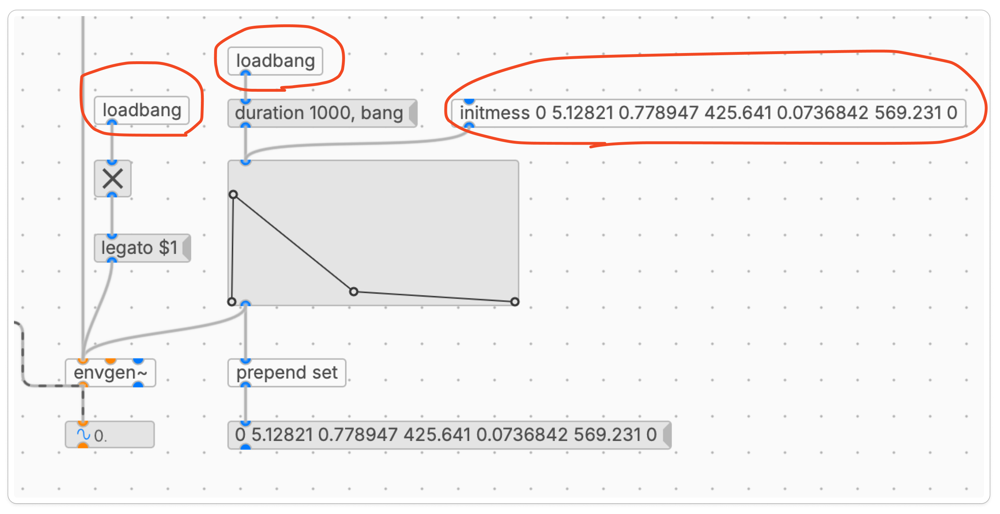
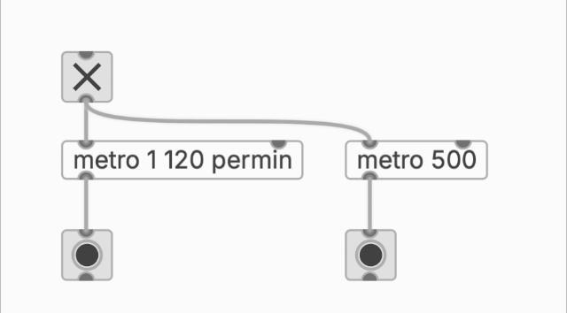
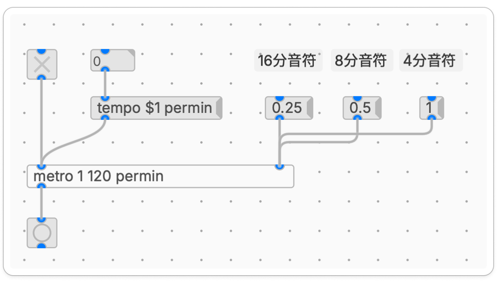
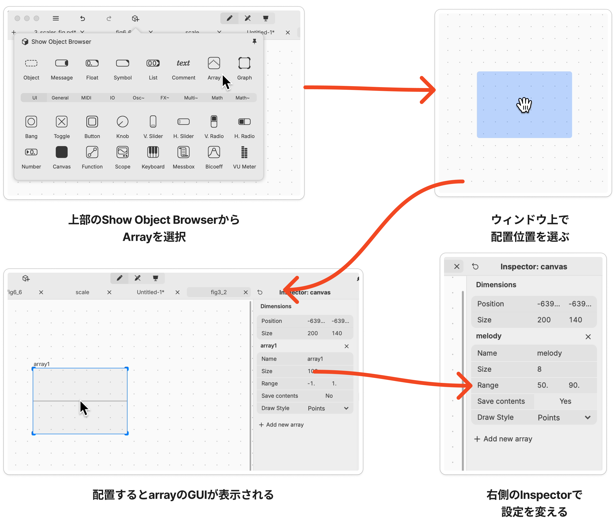
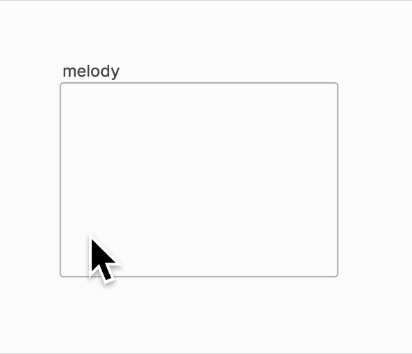
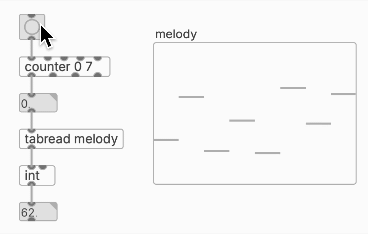
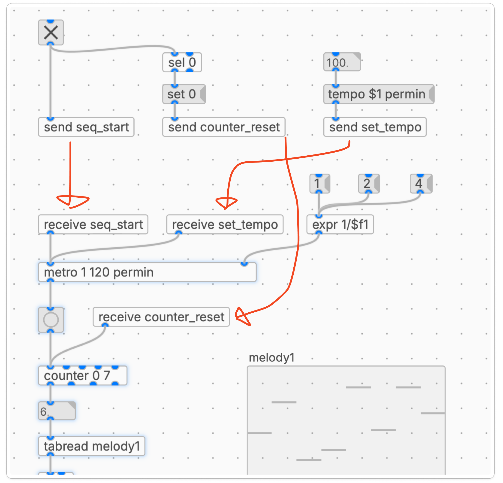
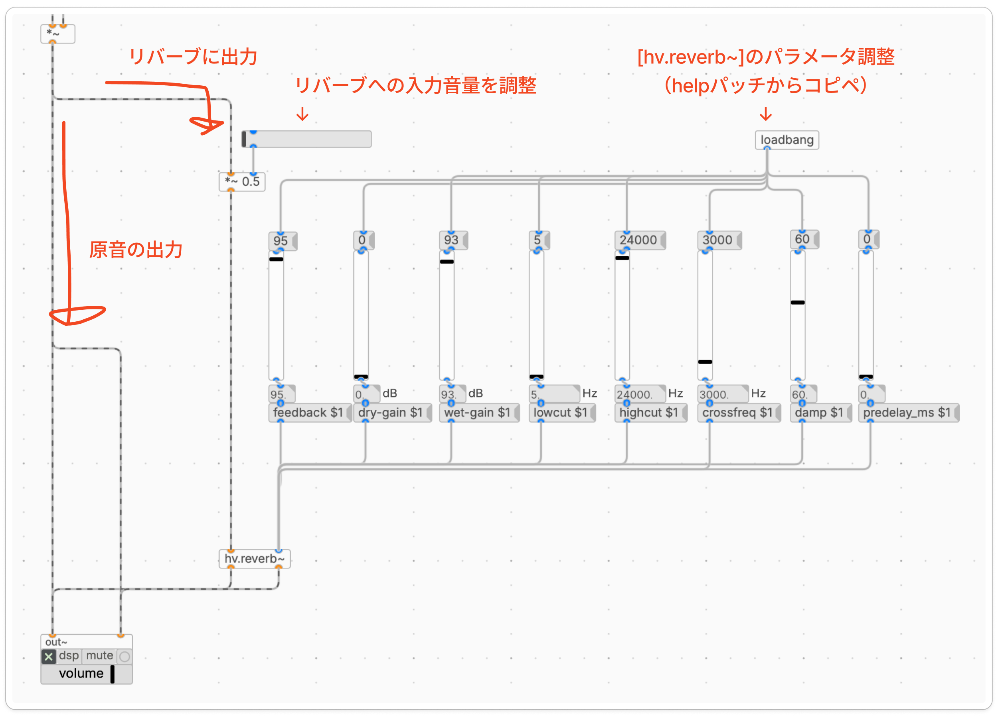

第4回 シーケンサ
滋賀大学 自主ゼミ「サウンドプログラミング入門」 2026年度 春学期
サンプルのダウンロード方法
Mac：
Option (Alt)キーを押しながら上のリンクをクリックするWindows： リンクを右クリックして「名前を付けてリンク先を保存」
または、クリックして表示されたテキスト（文字列）をすべてコピーし、テキストエディタに貼り付けて、ファイル名を
4_sequencer_chord.pd（拡張子を.pd）にして保存すれば、Plugdataで開けるようになります。
1. 今回の目的
1.1 今回扱うこと
第3回では、[rand.i] による ランダムな自動演奏 と、それをスケール上の音にスナップするスケーラーを作りました。第4回ではこれを発展させて、決まったパターンを繰り返すシーケンサー による短い演奏が可能なパッチを作っていきます。
BPM でテンポを指定する ―
[metro]のpermin単位を使って、BPM と音符長を独立に指定するarrayとtabreadでステップシーケンサ ―
[array]に描いた音の並びを[counter]と[tabread]で順番に読み出す【アレンジ1】ミニマル・ミュージックの作成 ―シーケンスを増やして、ミニマルなパターンを重ねる。リバーブを追加して
【アレンジ2】リバーブの追加 ― DAWのAUXのようにリバーブを追加し、響きを豊かにする
最終的には、4〜16分音符のメロディシーケンサ が同じテンポで同期して鳴る、ジェネレーティブな小品を完成させます。
1.2 前回の補足：funcdtionの初期設定を用意する
前回利用した [envgen~] や [function] について、ファイルを開き直すたびにレガートモードの設定やエンベロープの書き込みをやり直す必要がありました。これを起動時に自動で反映できるようにします。
[loadbang] は、パッチの起動時に自動でbangを出力するオブジェクトです。レガートモード用の [tgl] とエンベロープの長さを指定する [duration( メッセージの前にそれぞれ [loadbang] を繋いでおくことで、起動時に自動的にそれらをオンにできます。
エンベロープの形状を示すリストを [function] に反映させるには、[initmess] を利用します。[initmess] は 引数として与えたリストを起動時に出力する オブジェクトです。[function] から出力されているリストを引数として与えておけば、起動時にそのリストが [function] に流れ込み、エンベロープが自動的に書き込まれます。具体的には、[initmess 0 5. 0.5 400 ...] のようにエンベロープの情報を引数に入れた状態で [function] のインレットに繋げておきます。

図1.2 [loadbang]と[initmess]による初期設定や初期値の反映
2. metro でテンポを指定する
2.1 ミリ秒と BPM の関係
前回 [metro 500] と書いてきた数値は、「次の bang までのミリ秒」 を表していました。500 と書けば 500ms ごとに bang が出力されます。
しかし、音楽を作るときには「ミリ秒」よりも BPM（Beats Per Minute、1分間の拍数）で考える方が自然です。BPM と4分音符のミリ秒には、次のような関係があります。
4分音符の長さ(ms) = 60000 / BPM
| BPM | 4分音符の長さ |
|---|---|
| 60 | 1000 ms |
| 100 | 600 ms |
| 120 | 500 ms |
| 140 | 約 429 ms |
つまり、これまでの [metro 500] は BPM=120 の4分音符刻み に相当します。
2.2 metro に BPM を直接指定する
[metro] は実は引数を3つ取れます。
[metro 拍の長さ テンポ値 単位]
| 引数 | 意味 |
|---|---|
| 第1引数 | 拍の長さ（倍率）。右インレットでも設定できる |
| 第2引数 | テンポ値 |
| 第3引数 | 時間の単位 |
3つ目の引数で 時間の単位 を指定できます。音楽で便利なのが permin（per minute = 1分あたり）です。permin を指定すると、テンポ値が BPM そのもの として解釈されます。
[metro 1 120 permin] ← BPM 120 の4分音符刻み（=500msごとにbang）
ここで、第1引数の 1 は 拍の長さ（倍率） です。120 permin（BPM 120）を基準に、その何倍の長さの音符を刻むかを表します。1 なら基準そのまま＝4分音符です。
補足:
permin以外にもpermsec、persec、persampなどが使えますが、音楽用途ではほぼperminだけで足ります。

図2.2 [metro]のbpm設定とms間隔設定
2.3 音符長を変える（拍の長さの倍率）
BPM=120 のまま、8分音符や16分音符の刻みにしたい場合は、第1引数（拍の長さの倍率）を小さくします。8分音符は4分音符の半分の長さなので倍率 0.5、16分音符は1/4なので倍率 0.25 です。
| 音符長 | 倍率 | 例（BPM=120） |
|---|---|---|
| 4分音符 | 1 | [metro 1 120 permin] |
| 8分音符 | 0.5 | [metro 0.5 120 permin] |
| 16分音符 | 0.25 | [metro 0.25 120 permin] |
倍率が 小さいほど刻みが速く（細かく） なります。拍の「長さ」を指定しているので、長さが短いほど速い、と考えると分かりやすいです。
この倍率は、[metro] の 右インレット からも設定できます（右インレットにマウスを重ねると set metronome time for the next tempo と表示されます）。右インレットに 0.5 を送れば8分音符、0.25 を送れば16分音符の刻みになります。
2.4 BPMと音符長を動的に切り替える
演奏中に BPM と 音符長 を別々に変えられるようにします。[metro] はこの2つを別の経路で受け取ります。
BPMを変える には、[metro] に tempo メッセージを送ります。第3回で出てきた メッセージボックスの $1（左インレットに流れ込んだ数値に置き換わる引数）を使います。
[120] ← BPM 用の数値ボックス↓[tempo $1 permin( ← クリックすると "tempo 120 permin" が送られる↓[metro 1 120 permin] ← 本体（左インレット側）へ
音符長を変える には、拍の長さの倍率（4分=1、8分=0.5、16分=0.25）を 右インレット に送ります。ただし、「4分=1、8分=2、16分=4」という分割で考える方が直感的なので、分割数を入力して [expr 1/$f1]（逆数）で倍率に変換します。[expr] は、数式（expression）を書いて計算をするオブジェクト です。引数として書いた数式が、左インレットに値が入ってきたタイミングで計算され、結果がアウトレットから出力されます。
[1( [2( [4( ← 1=4分、2=8分、4=16分↓ ↓ ↓└─────┼─────┘↓[expr 1/$f1] ← 分割数を倍率に変換（2→0.5、4→0.25）↓[metro 1 120 permin] ← 右インレットへ
[expr 1/$f1] は、入力 $f1 の逆数を計算するオブジェクトです。2 を入れれば 0.5、4 を入れれば 0.25 が出力され、それが右インレットに渡って音符長が切り替わります。
これで、
[tempo $1 permin(で BPM を変える（即座に反映）分割数メッセージ
[1([2([4(で 音符長 を変える（次の拍から反映）
という独立した操作ができます。

図2.4 metroのBPMと音符長を変えれる仕様に
3. arrayとtabreadでステップシーケンサ
3.1 ランダムからシーケンスへ
第3回で作ったのは、[rand.i] による 完全にランダムな自動演奏 でした。これはこれで面白いのですが、毎回違うフレーズが鳴るため「狙ったメロディを繰り返す」ことはできません。
そこでこの章では、あらかじめ用意した音の並びを順番に繰り返す ステップシーケンサーを作ります。完成イメージは次のような流れです。
[metro] → [counter] → [tabread melody] → [pd scale_major] → [mtof] → [osc~]↑ ↑ステップを進める 配列から値を読む
[array] というGUIオブジェクトに音の並びを マウスで描き込み、それを順番に読み出していく仕組みです。
3.2 [array] でデータを描く
[array] は、複数の数値を格納できる配列（箱の列） で、その中身をグラフィカルに表示・編集できるGUIオブジェクトです。
[array] を配置すると、画面上に四角い領域が現れ、右側のインスペクタで設定を変更できます。今回は次のように設定します。
| 項目 | 設定値 | 意味 |
|---|---|---|
| Name | melody | 配列の名前（他のオブジェクトから参照するときに使う） |
| Size | 8 | 8個の値を格納できる（=8ステップ） |
| Range | 50 〜 90 | 値の範囲（MIDIノート番号として使う） |
| Save contents | Yes | パッチを保存したときに中身も保存される |
| Draw Style | Points | 各値を点で表示（他に Polygon や Bezier もある） |

図3.2.1 [array] の配置と設定
設定が終わったら、[array] の領域内で マウスでドラッグして音の並びを描き込みます。縦軸が値（50〜90、つまりMIDIノート番号）、横軸がステップ（0〜7）に対応します。

図3.2.2 [array] にマウスで音の並びを描き込む
3.3 [tabread] で配列から読み出す
[tabread] は、指定した配列の、指定したインデックスの値を読み出す オブジェクトです。
[tabread melody]
引数に配列名（melody）を指定し、左インレットに整数（インデックス）を入れると、対応する値が出力されます。例えば左インレットに 3 を入れれば、melody の3番目（0から数えて）の値が出てきます。
3.4 [counter] でステップを進める
[counter] は、bangを受け取るたびにカウントアップし、指定した範囲を繰り返す オブジェクトです。
[counter 0 7] ← 0〜7をループ（8ステップ）
引数で最小値と最大値を指定すると、bang のたびに 0 → 1 → 2 → … → 7 → 0 → 1 → … と循環します。
補足:
[counter 7]と引数1つだけ書いた場合も、plugdataでは最小値が0と解釈されて 0〜7 をループする動作になります。明示的に書きたい場合は[counter 0 7]とします。
3.5 bngで動作確認
メトロノームを動かす前に、ここでも 手動で動作確認 してみましょう。[counter] の入力に [bng] ボタンを繋いで、クリックするたびにステップが1つずつ進むことを確認します。出力値はfloatになっているため、[tabread melody]の出力に[int]を挟んでおいて整数の値を出力するようにしておきます。
[bng]↓[counter 0 7]↓[数値ボックス] ← クリックするごとに 0, 1, 2, ..., 7, 0, 1, ... と変化↓[tabread melody]↓[int]↓[float ボックス] ← arrayに描いた値が読み出される
[bang] を連打して、[counter] の数値と [tabread] の出力値が予想通りに変化するか確認しましょう。

図3.5 [tabread]の値を[counter]で順番に取り出す
3.6 シーケンサを組み立てる
ここまでの部品を組み合わせると、ステップシーケンサーは次のようになります。
x[tgl]↓[metro 1 120 permin] ← BPM 120 の4分音符刻み↓[counter 0 7] ← 0〜7をループ↓[tabread melody] ← melody の n 番目の値を読み出す↓[int]↓[pd scale] ← 第3回のスケーラーで音を整える↓ ↓[mtof] [bng]↓ ↓[osc~] [envgen~]↓ ↓[*~]
[array] に描いた音の並びが、[metro] のテンポで順番に演奏されます。スケーラーを通している ので、適当にマウスで描いた値でも自動的にスケール上の音にスナップされ、音楽的に整った響きになります。

図3.6 ステップシーケンサの全体図
3.7 シーケンサで遊ぶ
シーケンサーが動くようになったら、いろいろな実験ができます。
テンポを変える: BPM 数値ボックスの値や、音符長係数のメッセージで切り替え
arrayのサイズを変える: 16ステップにして長いフレーズを作る
arrayの中身を描き直す: 階段状、ジグザグ、山型などいろいろ試す
スケーラーを差し替える:
[pd scale_yonanuki]や[pd scale_okinawa]にすると、同じ配列でも雰囲気がまったく変わる
特に最後の 「同じパターンをスケールだけ差し替える」 は、第3回で作ったスケーラーが汎用部品として機能している良い例です。
4. 【アレンジ1】ミニマル・ミュージック
4.1 ミニマル・ミュージックとは
今回作ったシーケンサは、短いパターンを繰り返し再生する仕組みでした。これを 複数本走らせて重ねる と、20世紀後半に生まれた ミニマル・ミュージック（minimal music）という音楽の発想に近い響きが作れます。
ミニマル・ミュージックは、Steve Reich や Terry Riley、Philip Glass らによって展開された音楽で、特徴をざっくり挙げると次のようになります。
ごく 短いフレーズ（パターン）の反復 を基本単位にする
複数のパターンを 層（レイヤー）として重ねる
一つひとつは単純でも、重なり合うことで 複雑で立体的な響き が立ち上がる
音を少しずつ足したり引いたりして、ゆっくりと全体が変化 していく
4.2 複数のシーケンサを重ねる
3章で作ったシーケンサを 3つ並べて同時に走らせます。ポイントは、各レイヤーが 独立した
[metro]と[counter]、[array]を持つこと、そして 長さの異なるパターン にすることです。例えば次のように設定します。レイヤー array サイズ counter 範囲 metro レイヤー1 4 [counter 0 3][metro 1 120 permin]（4分音符）レイヤー2 8 [counter 0 7][metro 0.5 120 permin]（8分音符）レイヤー3 16 [counter 0 15][metro 0.25 120 permin]（16分音符）長さの異なるパターンが重なると、組み合わせが一巡するまで響きが変化し続けます（最小公倍数の周期で全体が一巡する）。音色や音域もレイヤーごとに変えると、層がはっきり分かれて聴きやすくなります。
4.3 tglを共通化して一斉に start/stop する
各レイヤーは独立した
[metro]を持ちますが、演奏のオン・オフだけは1つの[tgl]から全レイヤーに同時に送りたいので、[send]/[receive]で配信します。x
[tgl]↓[send seq_start][receive seq_start] [receive seq_start] [receive seq_start]↓ ↓ ↓[metro 1 120 permin] [metro 0.5 120 permin] [metro 0.25 120 permin]↓ ↓ ↓[counter 0 3] [counter 0 7] [counter 0 15]↓ ↓ ↓[tabread melody1] [tabread melody2] [tabread melody3]↓ ↓ ↓[pd scale_major] [pd scale_major] [pd scale_major]↓ ↓ ↓[mtof] [mtof] [mtof]↓ ↓ ↓[osc~] [saw~] [tri~]↓ ↓ ↓└────────[+~]─────────────┴────────────────────────┘↓[out~][tgl]を1回クリックするだけで3つの[metro]が同時にスタートし、もう一度クリックすれば全部止まります。さらに、
[tgl]がオフになったタイミングで すべての[counter]を 0 にリセット する仕組みも入れておきます。リセットを入れないと、前回止めた位置から続いてしまい、レイヤー同士の位置関係も毎回ズレてしまいます。[tgl]をオフにするたびに全レイヤーが頭出しされていれば、次にオンにしたときに必ずシーケンスの最初の音から演奏が始まります。仕組みは次の通りです。
xxxxxxxxxx[tgl]├──→ [send seq_start] （各 metro へ）│└──→ [sel 0] → [set 0( → [send counter_reset] （各 counter へ）（各レイヤー側）[receive counter_reset]↓[counter 0 7] の左インレットへ[set 0(メッセージは、各[counter]の値を 0 にセット（リセット）するための指示です。setメッセージは、カウントアップさせずに値だけを書き換える命令で、これを[counter]に送ることで現在のカウント値が 0 になります。[send counter_reset]/[receive counter_reset]で各レイヤーの[counter]に配信すれば、[tgl]を一度オフにするたびに全レイヤーが頭出しされた状態になります。
図4.3 sendでmetroとcouterのリセット
4.4 アレンジしてみる
まずは2レイヤーから始めて、3レイヤーまで増やしてみる
arrayの中身（音の並び）をレイヤーごとに変えて、低音は長くゆったり、高音は短く細かく、のように 役割を分けるcounter の範囲を
[counter 0 4]（5ステップ）のように 素数や奇数 にすると、周期がより複雑にズレて長く飽きない反復になる音符長の値に0.75や1.5、3などの付点音符の設定を使ってみる
「単純なパーツの重ね合わせから複雑さが生まれる」というミニマル・ミュージックの面白さを、自分の耳で確かめられます。
5. 【アレンジ2】リバーブをつける
シーケンサが完成したら、リバーブ（残響） をかけて音に空間的な広がりを加えてみましょう。
5.1 リバーブとは
リバーブは、音が壁や天井に反射して残る響き を再現するエフェクトです。原音（ドライ音）に残響成分（ウェット音）を足すことで、音が空間の中で鳴っているような印象になります。教会、ホール、部屋など、空間の大きさや材質によって響き方が変わります。
シーケンサの音はそのままだと素朴で硬い印象になりがちですが、リバーブを少し加えるだけで一気に音楽らしい雰囲気になります。
5.2 hv.reverb~ を使う
plugdataには、
[hv.reverb~]というリバーブのオブジェクトが用意されています。[hv.reverb~]のhelpパッチには、各パラメータを操作できるGUIがすでに組まれているので、それをそのまま自分のパッチにコピーして使うのが簡単です。[hv.reverb~]の右クリックメニューから「Help」を開き、リバーブ本体（[hv.reverb~]）と各スライダー（[hsl]）、メッセージボックス（[feedback $1(など）、初期化用の[loadbang]をまとめて選択してコピー、自分のパッチにペーストします。シンセの出力からリバーブへの接続は次のようになります。
xxxxxxxxxx（シンセ系統の出力）↓[*~ 0.5] ← リバーブへの送り量を調整↓[hv.reverb~]↓[out~][*~ 0.5]は、リバーブに送る前に音量を半分にすることで、リバーブのかかり具合を調整 しています。値を小さくすればリバーブが控えめに、大きくすればより深くかかります。5.3 パラメータの意味
[hv.reverb~]には8つのパラメータがあり、それぞれ[hsl]（水平スライダー）で操作できます。パラメータ 意味 値の例 feedback 残響の長さ（大きいほど長く残る） 95（長め） dry-gain 原音のレベル（dB） 0（原音そのまま） wet-gain 残響音のレベル（dB） 93（強め） lowcut 低域カットの周波数（Hz、これ以下を減衰） 5 highcut 高域カットの周波数（Hz、これ以上を減衰） 24000 crossfreq 低域と高域の境目（Hz、damp が効き始める周波数） 3000 damp 高域の減衰量（大きいほど高域が早く減衰し、自然な響きになる） 60 predelay_ms 原音とリバーブ開始の時間差（ms） 0 スライダーを動かしてリバーブの響きがどう変わるか、いろいろ試してみてください。特に feedback（残響の長さ）と damp（高域の減衰）を変えるだけで、教会のような長い響きから、こもった部屋鳴りのような響きまで作り分けられます。

図5.3 リバーブの追加
まとめ
[loadbang]と[initmess]による 起動時の初期設定[metro]のpermin単位による BPM ベース のテンポ指定[tempo $1 permin(メッセージ（BPM）と[expr 1/$f1]（分割数→拍の長さの倍率）を組み合わせた、BPM と音符長の独立制御[array]と[tabread]、[counter]による ステップシーケンサ長さの違うパターンを複数レイヤー重ねる、ミニマル・ミュージック的な多層構造
[hv.reverb~]による リバーブ（残響） の付加と、[hsl]を使ったパラメータ操作